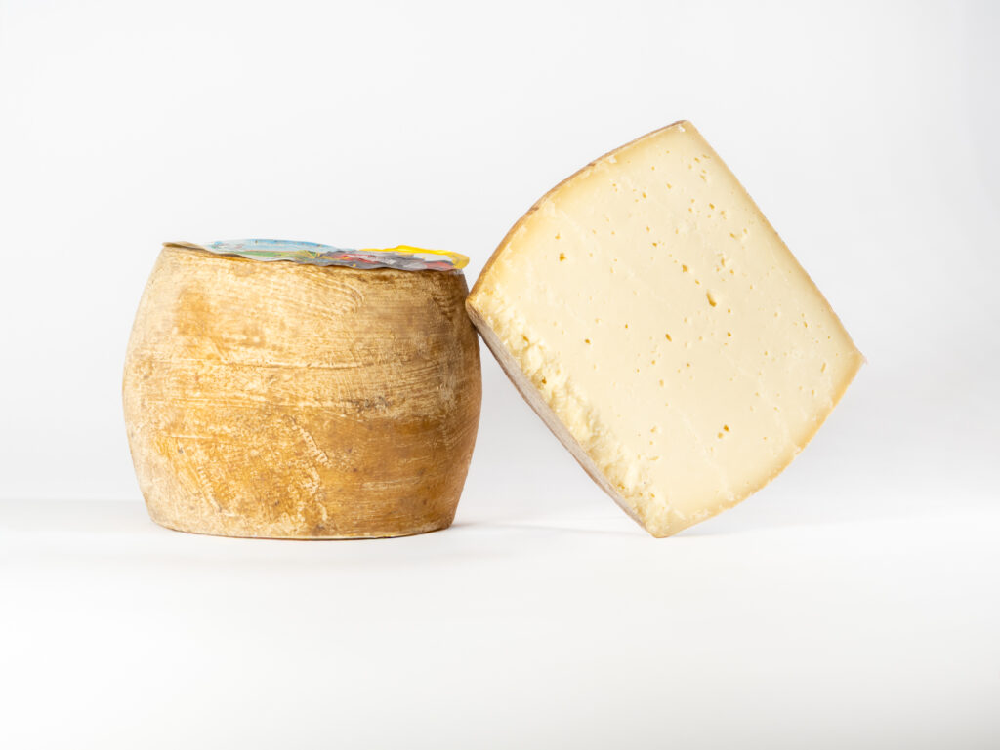

Mixed-milk cheese · 250 g
Made by Caseus S.r.l.
Su Furreddu, semi-aged mixed-milk cheese. It is a formaggio misto, not a sheep's-milk pecorino.
Caseus S.r.l., Regione Mesu 'e Jagas, Thiesi (SS), Sardinia.
Store at +2 to +4 °C.
28 g/100 g.
Sold here as a 250 g piece.
← Back to all cheeses